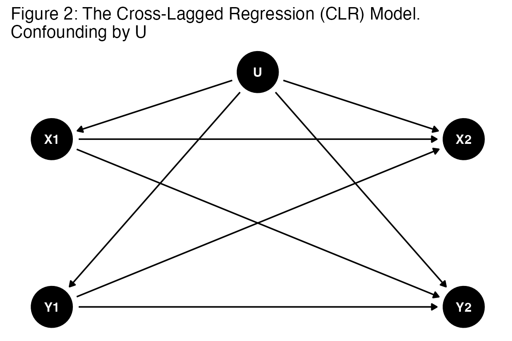
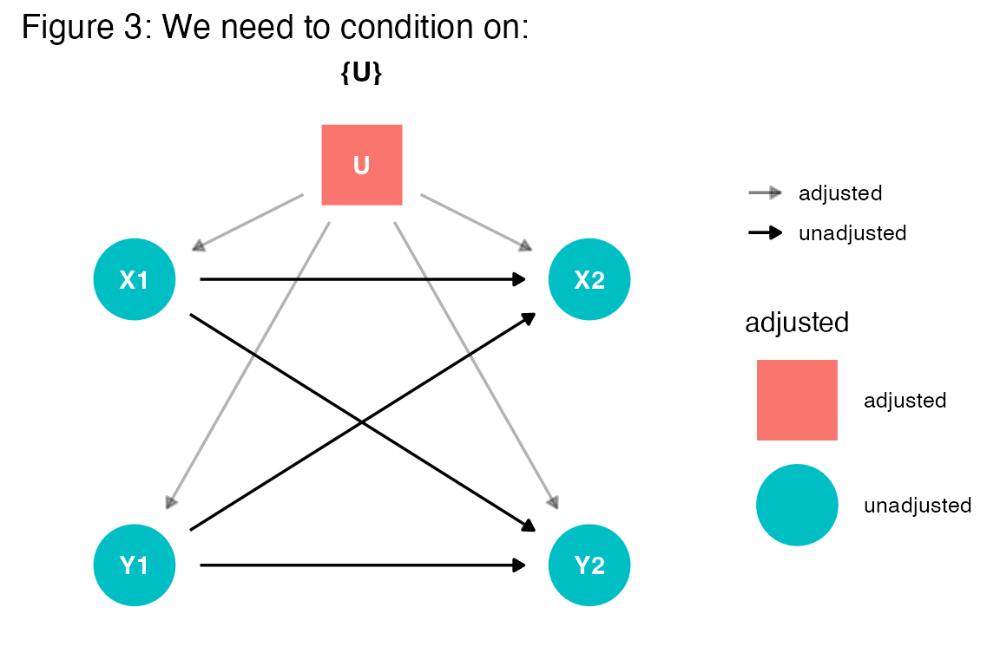

Simulating the consequences of unobserved confounding in the CLPM
Christopher Weber
2024-08-05
simulation.RmdThe Cross Lagged Regression Model
It is difficult to sort out causal mechanisms with cross-sectional observational data, panel and cross sectional. Causal relationships require careful theorizing about the data generating process. Data, particularly when observational, and statistical procedures do not guarantee that researcher will identify a causal mechanism.
suppressMessages(library(dplyr))
suppressMessages(library(haven))
suppressMessages(library(dagitty))
suppressMessages(library(ggdag))
suppressMessages(library(ggplot2))Yet, it is not uncommon for researchers to use statistical techniques to identify causal mechanisms, occasionally with very little theorizing about the data generating process. One such statistical technique is the cross-lagged panel model (CLPM). The CLPM is a variant of the Autoregressive Distributed Lag model used in econometrics, and the identified causal mechanism is a particular type of causality, Granger Causality. The reasoning is both simple and elegant. The notion is that if one measures \(x\) at time \(t-1\) and \(t\), and \(y\) at time \(t-1\) and \(t\), then one estimates a model that predicts \(y_{t}\) from \(x_{t-1}\) and \(y_{t-1}\), and an additional model where \(x_{t}\) is predicted from \(y_{t-1}\) and \(x_{t-1}\). The temporal ordering of the data is then used to identify causal relationships. Although one may not be able to manipulate \(x\) and \(t\) – to rule out spurious relationships – if \(x\) measured in the past predicts \(y\) in the present, but \(y\) measured in the past doesn’t predict \(x\) in the present, one can be reasonably certain that the causal ordering is such that \(x\) affects \(y\) and \(y\) does not affect \(x\). Graphically, the model can be represented as a Directed Acyclic Graph (DAG, Pearl 2001).
options(repr.plot.width = 2, repr.plot.height = 2) # Set smaller plot size
g <- dagitty("dag {
X1 -> Y2
Y1 -> Y2
X1 -> X2
Y1 -> X2
}")
coordinates(g) <- list(
x=c(U1=0.5, Y1=1,X1=1,Y2=2,X2=2, U2=3),
y=c(U1=1.5, Y1=1,X1=2,Y2=1,X2=2, U2=2.5) )
ggdag(g, text = TRUE) + theme_dag() + ggtitle("Figure 1: The Cross-Lagged Regression (CLR) Model") 
The CLPM is a variant of the Autoregressive Distributed Lag model used in econometrics, and the causal mechanism identified is often referred to as Granger Causality. Granger causality is a concept that means that if \(x\) measured at time \(t-1\) predicts \(y\) at time \(t\), then \(x\) Granger causes \(y\). The CLPM can be written as
\[\begin{eqnarray} y_{t=2, i}=a_0 + a_1 y_{t=1, i} + a_2 x_{t=1, i} + e_{1,i} \hspace{1in} (1)\\ x_{t=2, i}=b_0 + b_1 y_{t=1, i} + b_2 x_{t=1, i} + e_{2,i} \hspace{1in} (2)\\ \end{eqnarray}\]The conclusions from the CLPM attempts to leverage the temporal order in which variables are observed. If one were to estimate these two equations using traditional regression techniques, a large \(a_2\) coefficient represents a causal relationship from \(x_1\rightarrow y_2\); whereas a large \(b_2\) coefficient translates to reversed effect, i.e., \(y_1 \rightarrow x_2\). If \(a_2\) is large and \(b_2\) is effectively zero, it is tempting to conclude that \(x\) causes \(y\) but \(y\) does not cause \(x\). In both cases, we include the lagged value of the dependent variable, \(y_{t-1, i}\) and \(x_{t-1, i}\), to control for the effect of the dependent variable; each unit serves as their own control, or baseline. Should \(a_2\) or \(b_2\) reach conventional levels of statistical significance, it is tempting to conclude that a causal effect has been identified. Economists refer to this as Granger Causality, which is a statistical test of whether the lagged value of the independent variable can predict the dependent variable after controlling for the lagged value of the dependent variable.
While the reasoning is simple, rather strong assumptions about the data generating process must be made.. There several issues that arise upon estimating this model. The first pertains to the empirical consequence of including a lagged realization of the independent variable in the regression model, rather than contemporaneous effects; the the second issue pertains to inclusion of a lagged dependent variable (Allison 1990); and the third revolves around the identification of causal effects, particularly when there are unobserved confounders and stable unit effects.
Contemporaneous and Lagged Effects
A notoriously difficult issue with observational cross-section data is the identification of causal effects. The conditional effect of \(x\) on \(y\) \(x \rightarrow y\) even in the most carefully specified model, using sophisticated regression techniques will rarely allow one to rule out the possibility that an effect is spurious. This is because the researcher cannot control for all possible confounders.
It is tempting to draw upon panel data in these circumstances. The researcher may then include a lag of the indepedendent variable, empirically sidestepping the thorny issue of trying to identify the contemporaneous effect of \(x\) on \(y\). While the contemporaneous causal effect cannot be reliably estimated because it is likely confounded by unobservable variables. It is tempting to leverage the temporal nature of the data to estimate a lagged causal effect in place of the contemporaneous causal effect.
Such reasoning is relatively commom in the social sciences, dating back to the pioneering work of Campbell (1963) as well as Campbell and Stanley (1963). The publication of Finkel’s (1995) Sage monograph further popularized the technique. It is commonly used and referenced in empirical work, including that of the authors of this paper, on more than one occasion. For instance, Weber and Federico examine how authoritarianism stems from anxious and avoidant psychological attachment patterns. In defense of their findings, they write:
Although we assume that general psychological orientations like anxiety and avoidance should be causally prior to worldviews and ideology—like other researchers in this area (e.g., Jost et al., 2003)—longitudinal data would provide a less-ambiguous pattern of support for this assumption. For example, panel data on all relevant constructs would allow us to examine the strength of competing causal patterns using a cross-lagged design (Finkel, 1995). Similarly, actual developmental data might allow us to see whether attachment patterns early in life are predictive of different worldviews and ideologies later on.
Yet, Bellamare et al (2017) notes that a lagged realization of the independent variable does not necessarily improve one’s ability to identify a causal effect. Instead, it sidesteps the problem, moving from the identification of a contemporaneous causal effect to identifying a lagged causal effect. Unfortunately, the ordering of observations does not immediately improve one’s ability to identify a causal relationship, except in restrictive circumstances.
In particular, focusing on the lag of x moves the problem to identifying a lagged causal effect, effectively ignoring causal mechanisms that operate contemporaneously. This can be theoretically or empirically problematic. Theoretically, it is difficult to defend the notion that only a lagged, rather than contemporary, realization of the independent variable causally flows to the dependent variable. Empirically, failing to include contemporaneous independent variables in equations 1 and 2 will distort the estimated effect of the lagged independent variable on the dependent variable. The regression model may be be misspeficied, and the estimated coefficients subsequently biased.
Likewise, the inclusion of a lagged dependent variable is also problematic, for reasons well-documented in the literature (see Allison 1990). Introductory statistics textbooks present it in the context of autocorrelation, whereby including a lagged realization of the dependent variable will correlate with the error terms in equations (1) and (2), subsequently biasing parameter estimates and standard errors.
The DAG
Identitying causal effects with observational data is difficult due to the presence of confounding variables. The problem is not limited to cross-sectional data, and also apply to observational panel data (though occasionally for different reasons). Consider the causal diagram in Figure 2, a slight modification on the CLR model presented in Figure 1. In this case, we have added a confounder set \(U\) that is correlated with both \(x_1\) and \(y_1\), as well as \(x_2\) and \(y_2\).
g <- dagitty("dag {
X1 -> Y2
Y1 -> Y2
X1 -> X2
Y1 -> X2
U -> X1
U -> Y1
U -> X2
U -> Y2
U <-> U
}")
coordinates(g) <- list(
x=c( Y1=1,X1=1,Y2=2,X2=2, U=1.5),
y=c( Y1=1,X1=2,Y2=1,X2=2, U=2.4) )
ggdag(g, text = TRUE) + theme_dag() + ggtitle("Figure 2: The Cross-Lagged Regression (CLR) Model.\nConfounding by U")
In this case, the confounder set creates a “backdoor path” from U to \(x_2\) and \(y_2\) through \(x_1\) and \(y_1\). Ignoring the confounder set \(U\) will bias the estimates of the coefficients estimated in the model; this is the notion of “spurious regression” whereby we may even estimate a relationship when none exist.The solution advocated in most textbooks is to include the confounder set \(U\) in one’s regression model. This is also known as “back-door adjustment” as we condition on this confounder set blocking any paths that run through \(U\). This is reason researchers often include a set of control variables, occasionally an unwieldy set, a “kitchen sink” of numerous variables that may or may not be controls (King, 20??).
The figure below demonstrates that including the confounder set \(U\) blocks the backdoor path from \(x_2\) to \(y_2\) through \(x_1\) and \(y_1\).
ggdag_adjustment_set(g, exposure = "Y1", outcome = "Y2", shadow = "TRUE") + theme_dag() + ggtitle("Figure 3: We need to condition on:")
What if – in addition to the counfounder set – there exists contemporaneous effects, such as, \(x_1\) \(y_2\) and \(x_2\) \(y_2\)? Now the causal diagram becomes:
g <- dagitty("dag {
X1 -> Y2
X2 -> Y2
Y1 -> Y2
X1 -> X2
Y1 -> X2
U -> Y1
U -> Y2
X1 -> Y1
}")
coordinates(g) <- list(
x=c( Y1=1,X1=1,Y2=2,X2=2, U=1.5),
y=c( Y1=1,X1=2,Y2=1,X2=2, U=2.4) )
ggdag(g, text = TRUE) + theme_dag() + ggtitle("Figure 4: The Cross-Lagged Regression (CLR) Model.\nContemporaneous Causal Effect")
The presence of these contemporaneous effects poses a problem for two reasons. First, \(x_1 \rightarrow x_2 \rightarrow y_2\), where \(x_2\) mediates the effect of \(x_1\) on \(y_2\). What is more, \(y_1\) also serves a mediator for this effect. These effects are omitted from the CLPM as specified above. However, if such a relationship exists, including \(y_1\) – the lag of y, which we have done above – is also problematic. The reason is that \(y_1\) is a “collider.” Conditioning on \(y_1\) – the lag – will open several backdoor paths that will bias the estimated coefficients. In. this case, \(y_1\) opens up backdoor paths whereby the effect of \(y_1\) represents a potentially true effect plus indirect paths where the independent variable and the unobserved confounder affects \(y_2\). Because of this “collider bias” (Pearl 2001), one might be better served by excluding \(y_1\) from the estimated equation, adopting a simpler model, \(y_2 = \beta_1 x_1 + \epsilon\).
Simulate Data
\[\begin{eqnarray} E(Y^{X1=1} - Y^{X1=0} ) = E_{Z, U} [E(Y|X1=0, Z, U) - [E(Y|X1=0, Z, U)] = c_2\\ & E_{Z} [E(Y|X1=0, Z) - [E(Y|X1=0, Z)] = c_2 + \\ \end{eqnarray}\]to examine some of this, let’s simulated some data, using the package “CrossLag” – which includes a simulation function “simulate_observed_clr.”
- simulate_observed_clr: Simulate data for a cross-lagged panel model
- Vary cross lag, stability, waves, and contemporaneous effects
devtools::install_github("crweber9874/crossLag")## Using GitHub PAT from the git credential store.## Downloading GitHub repo crweber9874/crossLag@HEAD## Skipping 5 packages ahead of CRAN: loo, StanHeaders, bayesplot, rstantools, rstan## ── R CMD build ─────────────────────────────────────────────────────────────────
## * checking for file ‘/private/var/folders/rm/lnnn06ss2_j0ngxtflkxvf5w0000gt/T/RtmpnXS8xZ/remotesceec7f7e3756/crweber9874-crossLag-0f96589/DESCRIPTION’ ... OK
## * preparing ‘crossLag’:
## * checking DESCRIPTION meta-information ... OK
## * checking for LF line-endings in source and make files and shell scripts
## * checking for empty or unneeded directories
## Omitted ‘LazyData’ from DESCRIPTION
## * building ‘crossLag_0.1.0.tar.gz’## Installing package into '/private/var/folders/rm/lnnn06ss2_j0ngxtflkxvf5w0000gt/T/Rtmphi0JN5/temp_libpathc5ea5a0c846a'
## (as 'lib' is unspecified)## Warning: package 'lavaan' was built under R version 4.3.3## This is lavaan 0.6-18
## lavaan is FREE software! Please report any bugs.
library(crossLag)
library(ggplot2)
library(tibble)
simulate_observed_clr(waves = 2, sample.nobs = 2,
stability.x = 0.75, stability.y = 0.75,
contemporaneous.x = 0.5, cross.x = 0.5,
beta.z = 0.5, beta.u = 0.5,
var.y = 1, var.x = 1,
cov.xy = 0.5, cov.uz = 0.5)## $model
## [1] "\n u ~~ 0.5*z\n\n # Regression equations for the first wave\n x1 ~ 0.5*u + 0.5*z\n y1 ~ 0.5*u + 0.5*z + 0.5*x1\n \n x2 ~ 0.5*u +0.5*z + 0.75*x1\n y2 ~ 0.5*u +0.5*z + 0.5*x2+0.5*x1+0.75*y1\n x1 ~~ 1*x1\n y1 ~~ 1*y1\n \n x2 ~~ 1*x2\n y2 ~~ 1*y2\n \n x1 ~~ 0.5* y1\n \n x2 ~~ 0.5* y2\n "
##
## $data
## x1 y1 x2 y2 u z
## 1 1.02609740 2.121664 2.0483969 3.129582 0.2918971 0.194452
## 2 0.05438709 -2.160433 0.2798383 -1.700321 -0.3292720 -1.265119The function returns a list, the first element is the lavaan model syntax used to generate the data. The second is the data itself. This allows us to make necessary modifications to the model, which can be applied to the data.
example_data <- simulate_observed_clr(waves = 3, sample.nobs = 100)
# Fit lavaan model
fit <- sem(example_data$model, data = example_data$data)
summary(fit, fit.measures=TRUE, standardized=TRUE, rsquare=TRUE)## lavaan 0.6-18 ended normally after 10 iterations
##
## Estimator ML
## Optimization method NLMINB
## Number of model parameters 2
##
## Number of observations 100
##
## Model Test User Model:
##
## Test statistic 23.984
## Degrees of freedom 34
## P-value (Chi-square) 0.899
##
## Model Test Baseline Model:
##
## Test statistic 1153.499
## Degrees of freedom 28
## P-value 0.000
##
## User Model versus Baseline Model:
##
## Comparative Fit Index (CFI) 1.000
## Tucker-Lewis Index (TLI) 1.007
##
## Loglikelihood and Information Criteria:
##
## Loglikelihood user model (H0) -1092.362
## Loglikelihood unrestricted model (H1) -1080.370
##
## Akaike (AIC) 2188.724
## Bayesian (BIC) 2193.935
## Sample-size adjusted Bayesian (SABIC) 2187.618
##
## Root Mean Square Error of Approximation:
##
## RMSEA 0.000
## 90 Percent confidence interval - lower 0.000
## 90 Percent confidence interval - upper 0.032
## P-value H_0: RMSEA <= 0.050 0.982
## P-value H_0: RMSEA >= 0.080 0.001
##
## Standardized Root Mean Square Residual:
##
## SRMR 0.097
##
## Parameter Estimates:
##
## Standard errors Standard
## Information Expected
## Information saturated (h1) model Structured
##
## Regressions:
## Estimate Std.Err z-value P(>|z|) Std.lv Std.all
## x1 ~
## u 0.500 0.500 0.449
## z 0.500 0.500 0.403
## y1 ~
## u 0.500 0.500 0.323
## z 0.500 0.500 0.290
## x1 0.500 0.500 0.360
## x2 ~
## u 0.500 0.500 0.286
## z 0.500 0.500 0.257
## x1 0.900 0.900 0.573
## y2 ~
## u 0.500 0.500 0.159
## z 0.500 0.500 0.143
## x2 0.500 0.500 0.278
## x1 0.300 0.300 0.106
## y1 0.900 0.900 0.444
## x3 ~
## u 0.500 0.500 0.218
## z 0.500 0.500 0.196
## x2 0.900 0.900 0.686
## y3 ~
## u 0.500 0.500 0.099
## z 0.500 0.500 0.089
## x3 0.500 0.500 0.228
## x2 0.300 0.300 0.104
## y2 0.900 0.900 0.563
##
## Covariances:
## Estimate Std.Err z-value P(>|z|) Std.lv Std.all
## u ~~
## z 0.000 0.000 0.000
## .x1 ~~
## .y1 0.500 0.500 0.500
## .x2 ~~
## .y2 0.500 0.500 0.500
## .x3 ~~
## .y3 0.500 0.500 0.500
##
## Variances:
## Estimate Std.Err z-value P(>|z|) Std.lv Std.all
## .x1 1.000 1.000 0.636
## .y1 1.000 1.000 0.329
## .x2 1.000 1.000 0.258
## .y2 1.000 1.000 0.080
## .x3 1.000 1.000 0.150
## .y3 1.000 1.000 0.031
## u 1.266 0.179 7.071 0.000 1.266 1.000
## z 1.022 0.145 7.071 0.000 1.022 1.000
##
## R-Square:
## Estimate
## x1 0.364
## y1 0.671
## x2 0.742
## y2 0.920
## x3 0.850
## y3 0.969Let’s start by simulating a 2 wave panel with 100 observations. Vary the following :
- The effect of the unobserved confounder on the observed variables. [-0.8, 0.8]
RI-CLPM
Let’s reshape the data from wide to long, using reshapeLong from the package. This is useful to structure the simulated data.
dat = simulate_observed_clr(waves = 5,
sample.nobs = 1000,
stability.x = 0.90,
stability.y = 0.90,
contemporaneous.x = 0,
cross.x = 0.15,
beta.z = 0,
beta.u = 0.5,
var.y = 1,
var.x = 1,
cov.xy = 0.5,
cov.uz = 0.5)$data
# Estimate lmer
dat_long = reshape_long_sim_cr(dat)
head(dat_long)## # A tibble: 6 × 6
## id wave x y xlag ylag
## <int> <dbl> <dbl> <dbl> <dbl> <dbl>
## 1 1 1 0.739 -0.313 NA NA
## 2 1 2 -0.344 -1.12 0.739 -0.313
## 3 1 3 -0.287 -0.993 -0.344 -1.12
## 4 1 4 -1.63 -2.88 -0.287 -0.993
## 5 1 5 -2.34 -3.03 -1.63 -2.88
## 6 2 1 -1.51 0.0731 NA NA## Loading required package: Rcpp## Warning: package 'Rcpp' was built under R version 4.3.3## Loading 'brms' package (version 2.21.6). Useful instructions
## can be found by typing help('brms'). A more detailed introduction
## to the package is available through vignette('brms_overview').##
## Attaching package: 'brms'## The following object is masked from 'package:stats':
##
## ar
fit = brm(y ~ -1 + xlag + ylag + (1|id), data = dat_long)## Warning: Rows containing NAs were excluded from the model.## Compiling Stan program...## Start sampling##
## SAMPLING FOR MODEL 'anon_model' NOW (CHAIN 1).
## Chain 1:
## Chain 1: Gradient evaluation took 0.000212 seconds
## Chain 1: 1000 transitions using 10 leapfrog steps per transition would take 2.12 seconds.
## Chain 1: Adjust your expectations accordingly!
## Chain 1:
## Chain 1:
## Chain 1: Iteration: 1 / 2000 [ 0%] (Warmup)
## Chain 1: Iteration: 200 / 2000 [ 10%] (Warmup)
## Chain 1: Iteration: 400 / 2000 [ 20%] (Warmup)
## Chain 1: Iteration: 600 / 2000 [ 30%] (Warmup)
## Chain 1: Iteration: 800 / 2000 [ 40%] (Warmup)
## Chain 1: Iteration: 1000 / 2000 [ 50%] (Warmup)
## Chain 1: Iteration: 1001 / 2000 [ 50%] (Sampling)
## Chain 1: Iteration: 1200 / 2000 [ 60%] (Sampling)
## Chain 1: Iteration: 1400 / 2000 [ 70%] (Sampling)
## Chain 1: Iteration: 1600 / 2000 [ 80%] (Sampling)
## Chain 1: Iteration: 1800 / 2000 [ 90%] (Sampling)
## Chain 1: Iteration: 2000 / 2000 [100%] (Sampling)
## Chain 1:
## Chain 1: Elapsed Time: 7.53 seconds (Warm-up)
## Chain 1: 2.784 seconds (Sampling)
## Chain 1: 10.314 seconds (Total)
## Chain 1:
##
## SAMPLING FOR MODEL 'anon_model' NOW (CHAIN 2).
## Chain 2:
## Chain 2: Gradient evaluation took 9.1e-05 seconds
## Chain 2: 1000 transitions using 10 leapfrog steps per transition would take 0.91 seconds.
## Chain 2: Adjust your expectations accordingly!
## Chain 2:
## Chain 2:
## Chain 2: Iteration: 1 / 2000 [ 0%] (Warmup)
## Chain 2: Iteration: 200 / 2000 [ 10%] (Warmup)
## Chain 2: Iteration: 400 / 2000 [ 20%] (Warmup)
## Chain 2: Iteration: 600 / 2000 [ 30%] (Warmup)
## Chain 2: Iteration: 800 / 2000 [ 40%] (Warmup)
## Chain 2: Iteration: 1000 / 2000 [ 50%] (Warmup)
## Chain 2: Iteration: 1001 / 2000 [ 50%] (Sampling)
## Chain 2: Iteration: 1200 / 2000 [ 60%] (Sampling)
## Chain 2: Iteration: 1400 / 2000 [ 70%] (Sampling)
## Chain 2: Iteration: 1600 / 2000 [ 80%] (Sampling)
## Chain 2: Iteration: 1800 / 2000 [ 90%] (Sampling)
## Chain 2: Iteration: 2000 / 2000 [100%] (Sampling)
## Chain 2:
## Chain 2: Elapsed Time: 7.449 seconds (Warm-up)
## Chain 2: 2.876 seconds (Sampling)
## Chain 2: 10.325 seconds (Total)
## Chain 2:
##
## SAMPLING FOR MODEL 'anon_model' NOW (CHAIN 3).
## Chain 3:
## Chain 3: Gradient evaluation took 8.4e-05 seconds
## Chain 3: 1000 transitions using 10 leapfrog steps per transition would take 0.84 seconds.
## Chain 3: Adjust your expectations accordingly!
## Chain 3:
## Chain 3:
## Chain 3: Iteration: 1 / 2000 [ 0%] (Warmup)
## Chain 3: Iteration: 200 / 2000 [ 10%] (Warmup)
## Chain 3: Iteration: 400 / 2000 [ 20%] (Warmup)
## Chain 3: Iteration: 600 / 2000 [ 30%] (Warmup)
## Chain 3: Iteration: 800 / 2000 [ 40%] (Warmup)
## Chain 3: Iteration: 1000 / 2000 [ 50%] (Warmup)
## Chain 3: Iteration: 1001 / 2000 [ 50%] (Sampling)
## Chain 3: Iteration: 1200 / 2000 [ 60%] (Sampling)
## Chain 3: Iteration: 1400 / 2000 [ 70%] (Sampling)
## Chain 3: Iteration: 1600 / 2000 [ 80%] (Sampling)
## Chain 3: Iteration: 1800 / 2000 [ 90%] (Sampling)
## Chain 3: Iteration: 2000 / 2000 [100%] (Sampling)
## Chain 3:
## Chain 3: Elapsed Time: 7.232 seconds (Warm-up)
## Chain 3: 2.797 seconds (Sampling)
## Chain 3: 10.029 seconds (Total)
## Chain 3:
##
## SAMPLING FOR MODEL 'anon_model' NOW (CHAIN 4).
## Chain 4:
## Chain 4: Gradient evaluation took 9.5e-05 seconds
## Chain 4: 1000 transitions using 10 leapfrog steps per transition would take 0.95 seconds.
## Chain 4: Adjust your expectations accordingly!
## Chain 4:
## Chain 4:
## Chain 4: Iteration: 1 / 2000 [ 0%] (Warmup)
## Chain 4: Iteration: 200 / 2000 [ 10%] (Warmup)
## Chain 4: Iteration: 400 / 2000 [ 20%] (Warmup)
## Chain 4: Iteration: 600 / 2000 [ 30%] (Warmup)
## Chain 4: Iteration: 800 / 2000 [ 40%] (Warmup)
## Chain 4: Iteration: 1000 / 2000 [ 50%] (Warmup)
## Chain 4: Iteration: 1001 / 2000 [ 50%] (Sampling)
## Chain 4: Iteration: 1200 / 2000 [ 60%] (Sampling)
## Chain 4: Iteration: 1400 / 2000 [ 70%] (Sampling)
## Chain 4: Iteration: 1600 / 2000 [ 80%] (Sampling)
## Chain 4: Iteration: 1800 / 2000 [ 90%] (Sampling)
## Chain 4: Iteration: 2000 / 2000 [100%] (Sampling)
## Chain 4:
## Chain 4: Elapsed Time: 7.171 seconds (Warm-up)
## Chain 4: 2.834 seconds (Sampling)
## Chain 4: 10.005 seconds (Total)
## Chain 4:## Warning: There were 52 divergent transitions after warmup. See
## https://mc-stan.org/misc/warnings.html#divergent-transitions-after-warmup
## to find out why this is a problem and how to eliminate them.## Warning: Examine the pairs() plot to diagnose sampling problems## Warning: Bulk Effective Samples Size (ESS) is too low, indicating posterior means and medians may be unreliable.
## Running the chains for more iterations may help. See
## https://mc-stan.org/misc/warnings.html#bulk-ess## Warning: Tail Effective Samples Size (ESS) is too low, indicating posterior variances and tail quantiles may be unreliable.
## Running the chains for more iterations may help. See
## https://mc-stan.org/misc/warnings.html#tail-ess
summary(fit)## Warning: There were 52 divergent transitions after warmup. Increasing
## adapt_delta above 0.8 may help. See
## http://mc-stan.org/misc/warnings.html#divergent-transitions-after-warmup## Family: gaussian
## Links: mu = identity; sigma = identity
## Formula: y ~ -1 + xlag + ylag + (1 | id)
## Data: dat_long (Number of observations: 4000)
## Draws: 4 chains, each with iter = 2000; warmup = 1000; thin = 1;
## total post-warmup draws = 4000
##
## Multilevel Hyperparameters:
## ~id (Number of levels: 1000)
## Estimate Est.Error l-95% CI u-95% CI Rhat Bulk_ESS Tail_ESS
## sd(Intercept) 0.07 0.05 0.00 0.18 1.01 380 206
##
## Regression Coefficients:
## Estimate Est.Error l-95% CI u-95% CI Rhat Bulk_ESS Tail_ESS
## xlag 0.24 0.01 0.21 0.27 1.00 4667 2632
## ylag 0.97 0.01 0.95 1.00 1.00 1961 2369
##
## Further Distributional Parameters:
## Estimate Est.Error l-95% CI u-95% CI Rhat Bulk_ESS Tail_ESS
## sigma 1.04 0.01 1.02 1.07 1.00 2439 1444
##
## Draws were sampled using sampling(NUTS). For each parameter, Bulk_ESS
## and Tail_ESS are effective sample size measures, and Rhat is the potential
## scale reduction factor on split chains (at convergence, Rhat = 1).Obviously this is quite a bit different from the true parameter values. The stability coefficient should be 0.9; the cross-lag should be 0.15. Matters are substantially more problematic when the contemporaneous effect is present in the DGP. Again, this opens a colliding path for \(y\) biasing the coefficients.
```{r} dat = simulate_observed_clr(waves = 5, sample.nobs = 1000, stability.x = 0.90, stability.y = 0.90, contemporaneous.x = 0.5, cross.x = 0.15, beta.z = 0, beta.u = 0.5, var.y = 1, var.x = 1, cov.xy = 0.5, cov.uz = 0.5)$data
dat_long = reshape_long_sim_cr(dat) brm(y ~ -1 + xlag + ylag + (1|id), data = dat_long)